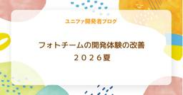

ユニファ開発者ブログ
https://tech.unifa-e.com/
ユニファ株式会社プロダクトデベロップメント本部メンバーによるブログです。
フィード

フォトチームの開発体験の改善 ２０２６夏
ユニファ開発者ブログ
フォトチームの開発体験の改善 ２０２６夏 こんにちは。開発二部の伊東です。 以前、フォトチームの開発体験の改善について記事を書きました。 tech.unifa-e.com あれから約２年、フォトチームの開発環境はかなり変わりました。 本記事では、前回の記事と比較しながら、この２年間でフォトチームが取り組んできた技術的負債の解消や、新しい開発スタイルへの挑戦についてご紹介させていただきます！✋️
3日前

ダジャレに見るFable 5の実力（そんな高尚な話ではありません）
ユニファ開発者ブログ
みなさんこんにちは。 AI開発推進部の田渕です。 ついに夏がやってきましたね！！！ 今年の梅雨は、家に閉じこもっててもAIさんたちと遊ぶ時間にできたので退屈しませんでした☺️ 今日はそんな私のFable 5活用記をお届けします。 尚、大変くだらない活用記ですので、世の中に多数ある有意義な記事を期待いただくとあとでがっかりすると思います。先に期待値調整をお願いいたします🙏
11日前
AWS DevOps Agent を触ってみた
ユニファ開発者ブログ
はじめに こんにちは、SRE の松田です。 普段の業務では主に AWS の運用を行っています。 「AI エージェントが運用を助けてくれる」という話題は最近よく見かけますが、実際のところ今の自分の業務に組み込めるのかどうか気になっていました。 実際に触って動かして、確かめるのが一番早いと思っています。 本記事では、AWS が 2026 年 3 月に GA した AWS DevOps Agent を、検証してみた結果をまとめます。「使ってみた」で終わらせないために検証を3つの段階に分けました。
23日前
開発生産性、改善していきます宣言！
ユニファ開発者ブログ
開発生産性、改善していきます宣言！ こんにちは、エンジニアマネージャーの本間です。 みなさんのチームは開発生産性の改善に日々取り組んでいますか？ 私たちのチームでは日々小さな改善は積み重ねているのですが、腰を据えて生産性改善に取り組む機会がなかなかありませんでした。 しかし、今後さらなる飛躍をするためには、ここで一度立ち止まりチームの生産性を本格的に改善することが必要だと判断しました。 ビジネスサイドの了承もいただき、この1年間は生産性向上のための施策をメインに取り組んでいく予定です。 この記事では、この1年で実施する予定の主な施策を紹介し、これをやり切ることを宣言します。
1ヶ月前
PostgreSQLアップグレードで学んだ「何が壊れるか」よりも「誰に影響するか」
ユニファ開発者ブログ
「何が壊れるか」よりも「誰に影響するか」 最近、PostgreSQL 15系から17系へのアップグレード対応を担当しました。 正直に言うと、最初は技術的な問題が一番大変だと思っていました。 PostgreSQL のメジャーバージョンアップなので、 非互換の変更はないか 利用しているライブラリに影響はないか Extension に問題はないか 本番環境でエラーが発生しないか といった点を心配していました。
1ヶ月前
テスト自動化 プログラミングの壁をClaudeCodeで超えたQAエンジニアのリアル
ユニファ開発者ブログ
テスト自動化：プログラミングの壁をClaude Codeで越えたQAエンジニアのリアル こんにちは。ユニファでQAエンジニアをしているとりごえです。 近年、AIツールの進化によってソフトウェアテストのあり方も大きく変わりつつあります。私自身、現在進行形で「ルクミー請求管理」のE2Eテストをゼロから自動化しているのですが、その強力な「相棒」として活躍しているのが Claude Code です。 今回は、プログラミングに深く精通していなくても、AIと対話しながらどうやってPlaywrightによるテスト自動化の壁を越えたのか。QAエンジニアの視点から、AI時代の新しい「協働作業」の実践例をご紹介し…
1ヶ月前
IoTデバイス開発で部品を評価するとき、PMが学んだ「何を測り、どう判定するか」
ユニファ開発者ブログ
こんにちは。ユニファでプロダクトマネージャーをしております、かじわらです。 前回の記事では、新型午睡センサーの開発についてお伝えしました。今回は、IoTデバイス開発を続ける中で向き合った「部品評価」というテーマについて書きたいと思います。
2ヶ月前
【6/18開催】SecureNavi × ユニファ共催！「エンジニアカジュアルNight」を開催します！
ユニファ開発者ブログ
みなさん、こんにちは！VPoE の柿本です。 この度、セキュリティ領域の DX を推進されている SecureNavi 株式会社さんとともに、エンジニア向けのトーク＆交流イベント『エンジニアカジュアルNight ～保育×セキュリティ、2社のエンジニアが語るプロダクト開発の現場～』を共同開催します！ ユニファの東京オフィスにて、オフライン形式で美味しい軽食やドリンクを片手にカジュアルに語り合う無料イベントです。 「他社の開発体制や現場のリアルな工夫を知りたい」 「社会課題解決に挑む SaaS スタートアップの開発に興味がある」 「最新の AI 活用や、プロダクトにおけるセキュリティの考え方を学び…
2ヶ月前
AIをどこで使い、どこで使わないか
ユニファ開発者ブログ
こんにちは。R&Dチームの浅野です。 「AIエージェント」という言葉を聞かない日はなくなってきました。「エージェントに任せれば全部やってくれる」「エージェントを使っていれば最先端のAI活用だ」という雰囲気が漂っていますが、実際のところ、自律性が高いほど良いシステムかというとそんなことはありません。今回は、私たちのチームが日々意識している「AIをどこで使い、どこで使わないか」という考え方についてまとめてみたいと思います。
2ヶ月前
「分ける」と「つなぐ」を両立する——19名の開発チームの会議体と情報流通の試行錯誤
ユニファ開発者ブログ
こんにちは。ノートチームPdMのさいとうです。昔からファシリテーションに関心があります。 チームが大きくなるほど「全員で話す」は機能しない プロダクトも人も増えるほど、「全員で話す」は機能しなくなります。けれど、「小さく分ける」だけでもうまくいかない。ルクミーの基本機能を担当するノートチームでは、このジレンマと向き合っています。 規模が大きくなると、会議の話題は広がりすぎる。一人ひとりが関心を持てる範囲を超える。横断の問題が起きたとき、合意形成がなかなか進まない。 かといって会議を増やせば、開発に使える時間が削れる。会議は増やしたいし、減らしたい。 このジレンマは、きれいには解けません。外部の…
2ヶ月前
えっ？ AIは、品質を〇〇〇〇〇！？ 3つの負債と、構造的テスト（SDAT）の話 【後編】
ユニファ開発者ブログ
前編のおさらい AIは「品質をバグらせる」増幅器だった AIは「品質をバグらせる」増幅器だ。Proactive QA（予防型）のチームはAIでプロダクトの品質を「強化させ」、Reactive QC（事後管理型）のチームはAIでプロダクトの品質を「悪化させ」、コストも急増する
2ヶ月前
えっ？ AIは、品質を〇〇〇〇〇！？ 3つの負債と、構造的テスト（SDAT）の話 【前編】
ユニファ開発者ブログ
どうも！ AI開発推進部でQA（品質保証）エンジニアを担当しています、たかだ（@tackaaaada）です！ 早速ですが、AIコーディングツールを導入して、普段の開発業務は「いい感じ」に進んでいますか？ すっかり、AIでコーディングするのも「当たり前」になってきた、今日このごろ。 僕はというと、ちょっと気になることがあるんです！ そう、「AIは、品質を〇〇〇〇〇んじゃないか」って。
3ヶ月前
Slack × n8n × BigQuery：「データアナリスト園児」Bot を作った話
ユニファ開発者ブログ
はじめに こんにちは、ユニファでプロダクトマネージャー（PdM）をしている石井です。 今回は、Slack から n8n のワークフローを起動し、BigQuery での集計結果を返す「データアナリスト園児」Bot をつくった際の試行錯誤について書きます。 私は 2026年1月にユニファへ入社しました。入社直後は、PdM としてユーザーがプロダクトをどのように使ってくれているかを理解するため、顧客訪問で現場感を掴みつつ、操作ログやデータベースなどデータの観点からも理解を深めていきました。 ちょうどその頃、社内では n8n の試験導入が進んでいました。 n8n のキャッチアップとあわせ、私が入社直後…
3ヶ月前
自動顔認識技術の50年
ユニファ開発者ブログ
こんにちは、ユニファで機械学習エンジニアをしている藤塚です。 現在、顔認識は世の中で当たり前のように使われるようになっており、様々なサービスの基盤になっています。ユニファでも顔認識システムを独自で開発しており、過去のブログで顔認識システムの紹介もしています。 tech.unifa-e.com 現在、さらなる精度向上を目指し基盤モデルの更新を行っています。 今回は、[1] [2505.24247] 50 Years of Automated Face Recognition のサーベイ論文に基づいて、顔認識技術がこれまでどのような道を辿ってきたのかということを振り返ってみました。 歴史的なところ…
4ヶ月前
初めての SLI/SLO 設計
ユニファ開発者ブログ
こんにちは、SRE の中村です。 ユニファでは SLI/SLO が設計されておらず、Slack の監視アラート通知チャンネルに通知が来ていなければ健全、アラートが来たらどこか異常の可能性あり、というように、健全性の定量的指標がありませんでした。 どんどんプロダクト数が増え、機能も増え、より複雑性が増す中でこのままの状態を続けるのは SRE として黙っていられない。 という思いが少しばかりと、あとは単純に SLI/SLO を運用してみたいという好奇心から PJ を発足しました。 私自身、SLI/SLO の運用経験は全くありませんでしたので、Google SRE や他社様の事例を参考にさせていただ…
4ヶ月前
フルリモートでのジョインで感じたユニファの組織文化とオンボーディング期間のふりかえり
ユニファ開発者ブログ
2026年1月にユニファへPdMとしてジョインした著者が、フルリモート環境下での激動の3ヶ月を振り返ります。PCセットアップでの苦戦から、同社の強固な「ドキュメント文化」を活用した自走プロセス、自ら提案したオンボーディング改善、そしてAI（RAG）を駆使した「ギャルパイセン」の開発まで。ベンチャー特有の「整いすぎていない自由さ」を楽しみながら、能動的な「Give」を通じて早期にプロジェクトリードを任されるに至るまでの、リアルな軌跡と仕事のスタンスを綴ります。
4ヶ月前
AIの視点から逆算する デザインデータの作り方
ユニファ開発者ブログ
こんにちは、ユニファでプロダクトデザイナーをしている砂田です。 今回、AI活用してLPの制作を行って見えてきた、AIとの関わり方や、 意図どおりにデザインを再現させるためのポイントが見えてきたのでご紹介します。 lookmee.jp
4ヶ月前
LLM-as-a-Judge奮闘記！〜評価軸と技術選定のお話〜
ユニファ開発者ブログ
発見的推理は最終的で厳密なものではなく,（中略）その目的は当面する問題の解を求めることである. ジョージ・ポリア 著、柿内 賢信 訳：いかにして問題をとくか より はじめに LLM-as-a-Judgeって、なに？ はじめの一歩 「軸」を決める 「評価軸」を決める 技術選定 「軸」「評価軸」「技術選定」からのインサイト おわりに
5ヶ月前
視覚優位・聴覚優位 × 同時処理・継次処理 それぞれの特性に合わせて NotebookLM を使い分けるヒント
ユニファ開発者ブログ
はじめに こんにちは、ユニファのPdMのイトウです。 同じ説明をしているはずなのに、すっと理解できる人と、途中で迷子になってしまう人がいます。 その背景には、「視覚優位／聴覚優位」 や 「同時処理／継次処理」 といった、情報の受け取り方・処理の仕方の違いがあります。 一方で、NotebookLM のようなAIツールは、「こういう使い方をしましょう」と一つの正解パターンだけが紹介されがちです。 でも本当は、その人の特性ごとに「見せ方」「聞かせ方」「分け方」を変えることで、学びや仕事のしやすさが大きく変わるはずです。 この記事では、 視覚優位・聴覚優位 同時処理・継次処理 そして「自分にとっての"…
5ヶ月前
デザインカンファレンスのブースの体験設計についてふりかえる
ユニファ開発者ブログ
デザイナーのようがいです！ 2025年12月に開催された TOKYO CREATIVE COLLECTION 2025（TCC2025）にて、ユニファブースのリード役として、ブースの体験設計と制作物のラフ案作成、進捗管理、印刷物の入稿作業などなど幅広く担当しました。 私自身はブース出展に携わるのが初めてでいろいろと手探り状態でしたが、本記事では「コンセプト決め」「コンテンツ決め」のプロセスをふりかえってまとめたいと思います。
5ヶ月前
「具体→抽象→具体」で、"AIエージェントといっしょに"テストを書いてみよう！
ユニファ開発者ブログ
「成功したギバーは、自分だけではなくグループ全員が得をするように、パイ（総額）を大きくする。」 アダム・グラント 著、楠木 建 訳：GIVE & TAKE 「与える人」こそ成功する時代 より 目次（クリックすると展開されます） はじめに モチベーション 突然ですが、ここで「感謝の言葉」 書いてくれたテスト観点を、見てみる 実際に、やってみた 1. memory/ - プロジェクトの憲法と品質辞書 constitution.md iso25010-quality-dictionary.md 2. scripts/bash/ - ワークフロー自動化スクリプト common.sh create-ne…
5ヶ月前
パパPMが育休3ヶ月取ってきました
ユニファ開発者ブログ
こんにちは、ユニファでプロダクトマネージャーをしている、たしろです。 タイトルの通り、第二子の誕生を機に、2025年11月頭から2026年1月末まで約3ヶ月間の育休を取得し、今月2月に復帰しました。 今回は、いつものプロダクトマネジメントの話題から少し離れて、初めての育休で感じたことなどを率直に書いてみたいと思います。 （育休を取得した背景については、以前Wantedlyのインタビューでお話しさせていただきました。当時の心境や社内の反応なども語っていますので、よければぜひご覧ください。） www.wantedly.com
6ヶ月前
幼児期の文字習得とUDフォント──システム開発の視点から考える
ユニファ開発者ブログ
自己紹介 こんにちは。PdMのイトウです。小5の子どもがいます。 2025年11月に入社し、初めてのブログ投稿になります。 はじめに 幼児期は文字を認識し、書くことを学ぶ重要な時期です。この時期の文字との出会い方が、その後の学習意欲や読書習慣に大きく影響します。文字の形や読みやすさは、学び始めたばかりの子どもにとって学習のハードルを大きく左右します。本稿では、ユニバーサルデザインフォント（UDフォント）が幼児期の文字習得にどのような影響を与えるか、システム開発の視点も交えながら考察します。
6ヶ月前
コーポレートサイト リデザインプロジェクトの裏側
ユニファ開発者ブログ
こんにちは。デザイナーのなかとみです。 ユニファはこのたび、コーポレートサイトのリニューアルを行いました。 本記事では、 「なぜ今、コーポレートサイトを刷新したのか」 「どんな思想でデザインし、どう実装したのか」 を、デザイン視点で振り返ります。
6ヶ月前
DSPyによるマルチモーダルタスクのプロンプト自動調整
ユニファ開発者ブログ
こんにちは。R&Dチームの浅野です。 LLMを活用することで自然言語によってソフトウェアの挙動を変えることができるというのは改めてすごいことですね。OpenAIやGoogleなどが提供する商用APIはモデルのライフサイクルが速く、モデルが変わるごとにプロンプト調整が必要になることが多いため、プロダクトでLLMを活用した機能開発を進めていく上で辛いポイントの1つです。 DSPy は、LLMを活用したアプリを宣言的に記述することにより、プロンプト最適化をアルゴリズムに任せることができ、手作業による試行錯誤から解放してくれる、という夢のようなフレームワークです。 dspy.ai DSPyの活用方法に…
6ヶ月前
保育AI開発 2年間の振り返り(その1)
ユニファ開発者ブログ
みなさんこんにちは。 AI開発推進部の田渕です。 あけましておめでとうございます🎍 みなさま、どんな年末年始をお過ごしになったでしょうか？ 新年最初のブログということで、今回は保育AIのこれまでを弊社のブログの内容を元にして振り返りつつ、2026年に向けた展望を書いていきたいと思います。 なお、タイトルにも記載ある通り実はこの記事は複数回連載の第一回となっております。 まだまだこの二年の間の取り組みで書けていないことがたくさんあるため、第二回以降にそちらにも触れていきます。
7ヶ月前
Rails Girls Tokyo 18th に託児スポンサーとして協賛します！
ユニファ開発者ブログ
みなさん、こんにちは。VPoE の柿本です。 この度、2026年2月13日（金）、14日（土）に開催される Rails Girls Tokyo 18th に、託児スポンサーとして協賛させていただくことになりました。 Rails Girls Tokyo は、女性がプログラミングの世界に一歩を踏み出すためのワークショップです。 Ruby on Rails を使って実際にアプリケーションを作りながら、テクノロジーの楽しさを体験できるイベントとして、初心者を含む多くの方が参加されています。
7ヶ月前
TOKYO CREATIVE COLLECTION 2025 ブース出展しました！
ユニファ開発者ブログ
2025年12月16日(火)・17日(水)に東京ポートシティ竹芝ポートホール・浜松町館3階展示スペースで開催された「TOKYO CREATIVE COLLECTION 2025 」にユニファはスポンサーとして参加し、ブース出展を行いました！ デザイナーのようがいです。 ユニファブースへお立ち寄りいただいた皆さまありがとうございました！ ルクミーご利用中の方も多くいらっしゃり、直接お話することができてとてもうれしかったです。 ＼ルクミー出展中／TOKYO CREATIVE COLLECTION 2025東京都立産業貿易センター 浜松町館 3F本日お立ち寄り頂きました皆さま、ありがとうございました…
7ヶ月前
既存APIサーバー移行のための負荷テスト設計と実施事例について
ユニファ開発者ブログ
こんにちは、プロダクトエンジニアリング部の周です。 最近、社内の内部APIサーバーの一つを、AWSのEC2からECS Fargateへ移行しました。 既存のEC2 APIサーバーですでに一定のトラフィックを捌いているシステムだったため、移行後のECS環境でも同等のパフォーマンスが出せるか、適切なスペックやオートスケーリング設定はどうすべきかなどを検証する必要がありました。そこで、移行前に負荷テストを実施しました。 本記事では、その際の負荷テスト設計や実施内容についてシェアしたいと思います。
7ヶ月前